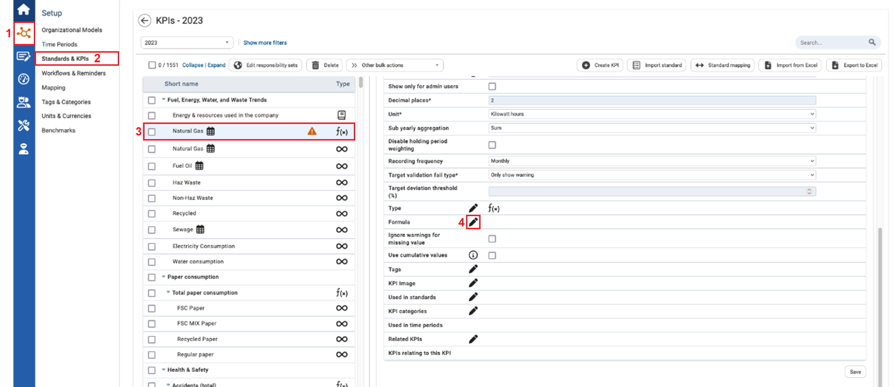
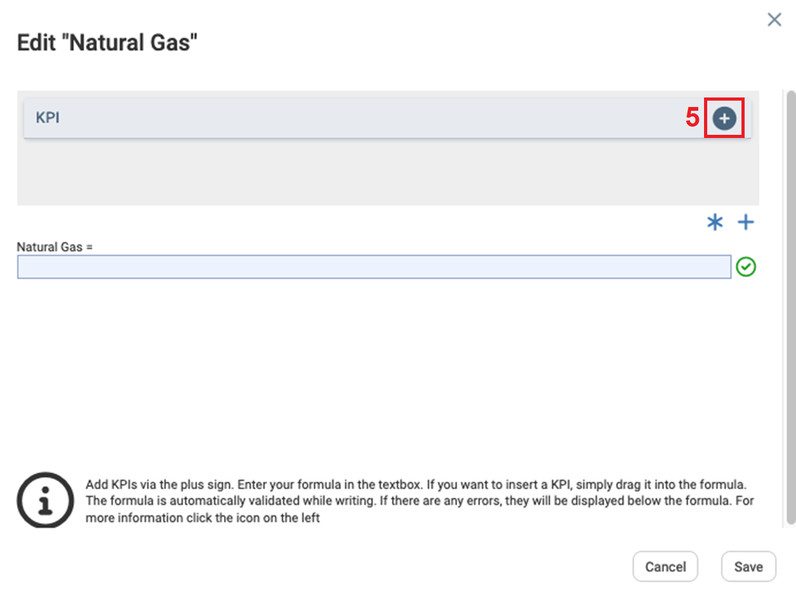
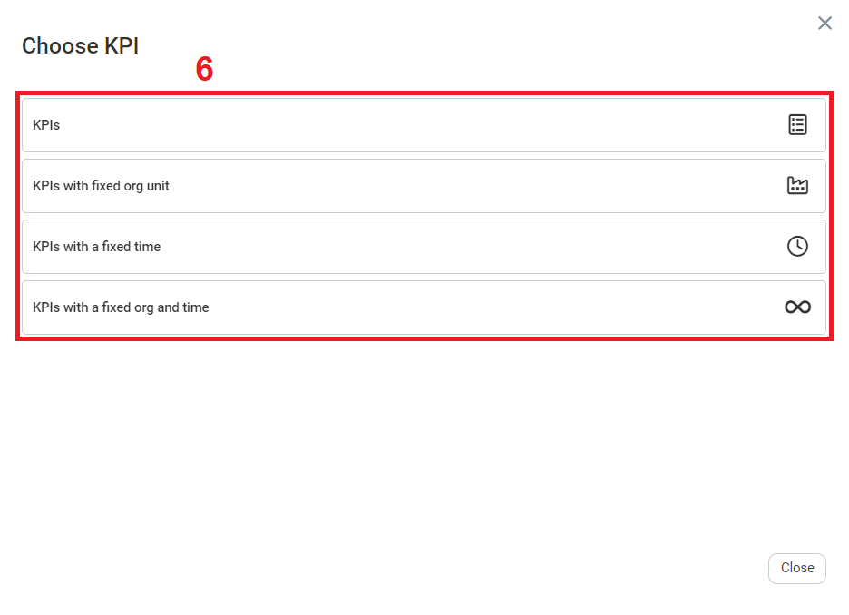
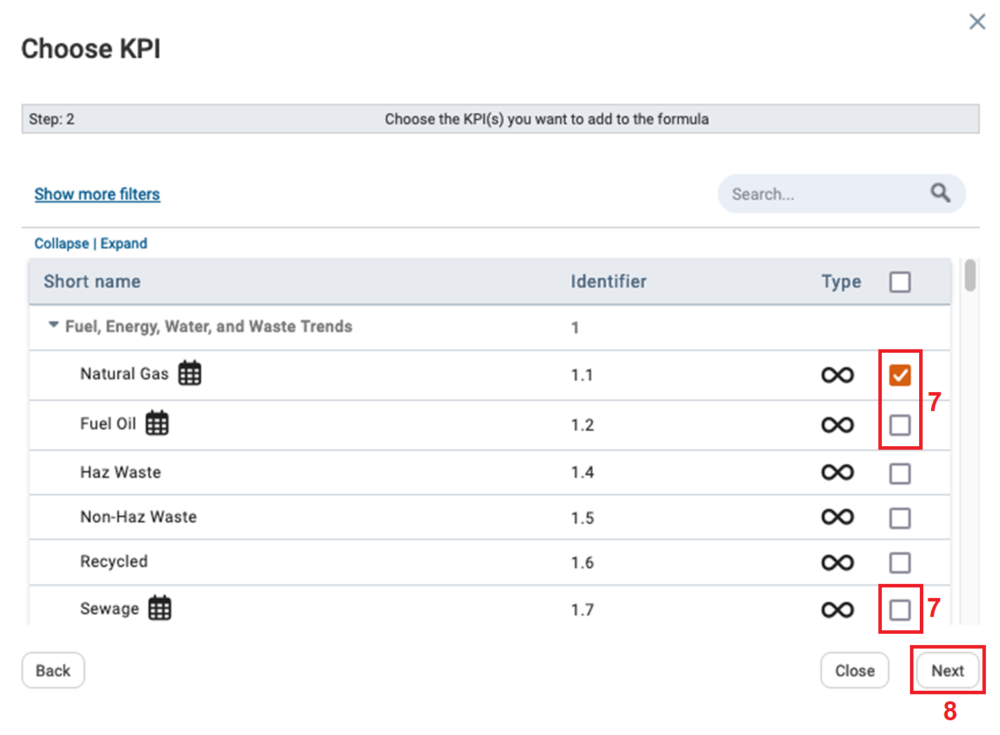
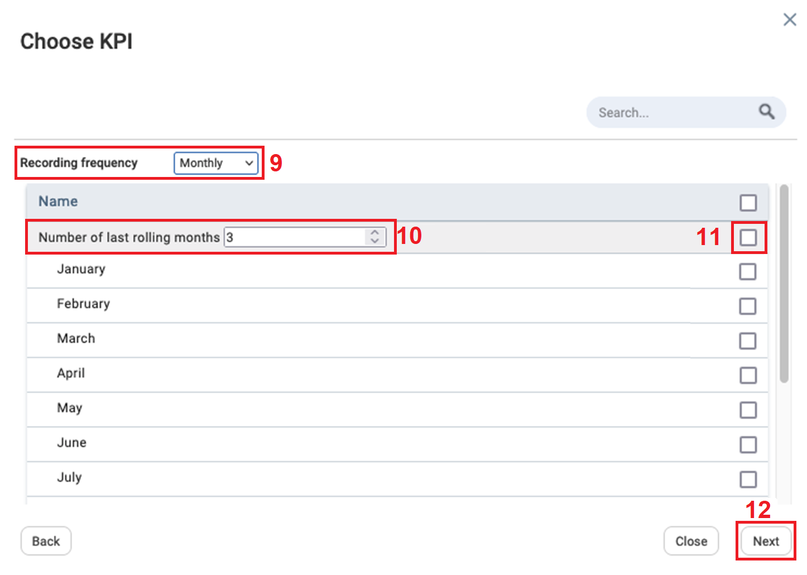
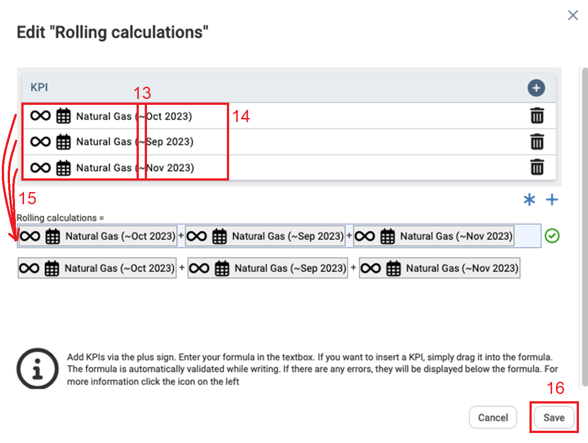

In the Standards and KPIs module, rolling calculations automatically calculates sub-yearly KPIs based on the number of last rolling KPI values included by the user.
To Create Rolling Calculations for Sub-yearly KPIs

| 1 | On the left navigational panel, click the Setup icon. The Setup menu appears. |
| 2 | Click Standards & KPI. The Standards & KPI window appears. |
| 3 | Click a formula KPI that you want to enter a rolling calculation. On the right information of the KPI appears. |
| 4 | Once you have ensured you are on the Settings tab, scroll down until you get to Formula and click the Edit icon. The Edit KPI window appears. |

| 5 | On the Edit KPI window, click the icon. The Choose KPI window appears. |

| 6 | On the Choose KPI window, click one of the fields. Depending on the selected field the pop-up windows can slightly differ, the one that was selected for this example was KPIs. |

| 7 | Select a Sub-Yearly KPI. Sub-Yearly KPIs have a calendar icon to the right of the KPI name. |
| 8 | Click Next. The Choose KPI window opens. |

| 9 | In the Recording Frequency dropdown text box, select a sub-yearly recording frequency. |
| 10 | Depending on the selected recording frequency, enter the “Number of last rolling months, quarters or half-years”. |
| 11 | Select the checkboxes next to the number of last rolling months, quarters and half-years. |
| 12 | Click Next. The Edit KPI page appears. |

| 13 | On the Edit KPI page, the rolling KPIs are illustrated with an (~) at the end of the KPI. |
| 14 | The number of last sub-yearly rolling KPIs will display based on number of last sub-yearly rolling KPIs value inputted on the previous window. |
| 15 | Click and drag each rolling KPI into the Formula line. |
| 16 | Click Save. |